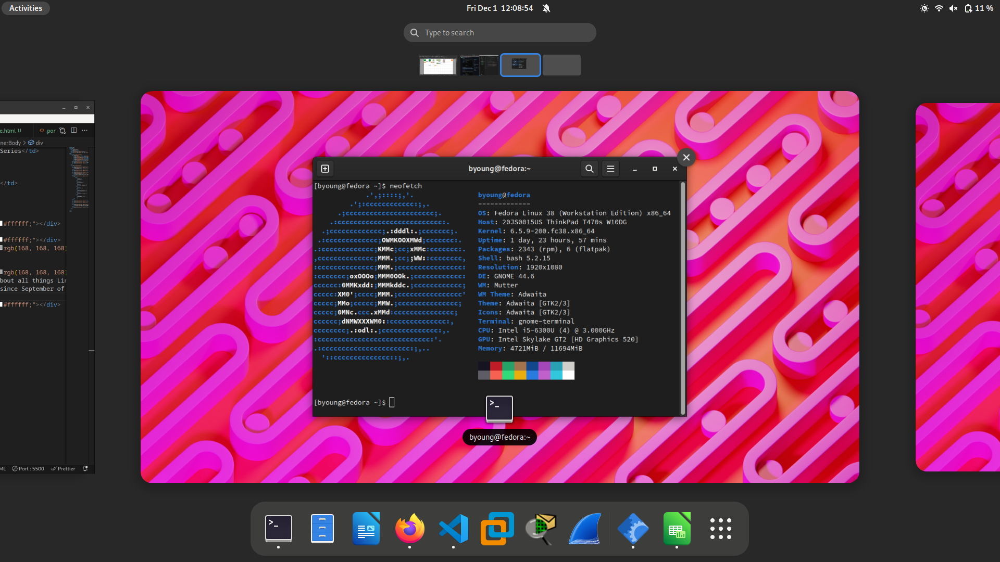

NSCC Alumnai
I graduated from NSCC's Business Administration program with a focus on accounting on June 6th, 2023

Sci-Fi Enthusiast
I love all things classic sci-fi- Especially Star Trek (Which I have ranked from best to worst, according to personal preference) & the works of Douglas Adams. You may know Douglas Adams from the Netflix original Dirk Gently's Holistic Detective Agency, an adaptation of one of his series of novels. What he's truly famous for is his series of sci-fi novels The Hitchhikers Guide to the Galaxy. Many of even his biggest fans dont know, however, that the novel series started as a BBC Channel 2 audio drama!
| Rank | Series |
|---|---|
| 1 | Enterprise |
| 2 | The Next Generation |
| 3 | Voyager |
| 4 | The Animated Series |
| 5 | The Original Series |
| 6 | Deep Spacee 9 |
